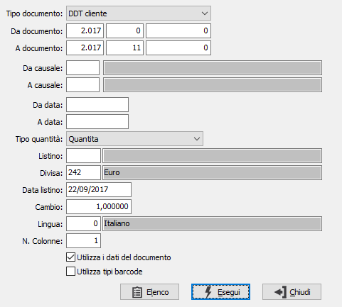
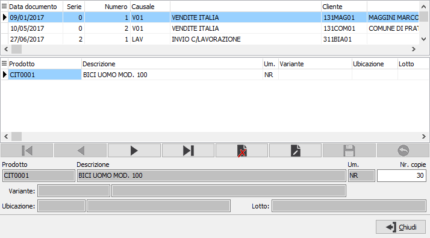

Stampa etichette barcode documenti
Il programma consente di stampare le etichette dei prodotti collegati ai documenti riportando il codice a barre.

TIPO DOCUMENTO: definisce il tipo di documento per cui effettuare la selezione:
DDT cliente
Fatture clienti
Ordini clienti
DDT fornitori
Fatture fornitori
Ordini fornitori
Movimenti di magazzino
DA DOCUMENTO: tre campi per contenere rispettivamente anno, serie sezionale e numero del documento da cui si vuole iniziare la selezione. Confermando a vuoto, la selezione inizia dal primo documento compatibile con i successivi parametri.
A DOCUMENTO: tre campi per contenere rispettivamente anno, serie sezionale e numero del documento con cui si vuole concludere la selezione. Confermando a vuoto, la selezione termina con l’ultimo documento compatibile con i successivi parametri.
DA CAUSALE: codice della causale documento da cui si vuole iniziare la selezione. Confermando a vuoto, la selezione inizia dalla prima causale valida. Sul campo sono attive le funzioni di ricerca (F9).
A CAUSALE: codice della causale documento con cui si vuole iniziare la selezione. Confermando a vuoto, la selezione termina all’ultima causale valida. Sul campo sono attive le funzioni di ricerca (F9).
DA DATA: data documento da cui si vuole iniziare la selezione. Confermando a vuoto, la selezione inizia dalla prima data valida.
A DATA: data documento con cui si vuole concludere la selezione. Confermando a vuoto, la selezione inizia dalla prima data valida.
TIPO QUANTITÀ: consente di selezionare la quantità da utilizzare per la stampa delle etichette, indica il numero delle etichette da stampare. Il contenuto del campo varia in base al tipo documento selezionato.
LISTINO: indica il codice del listino utilizzato per reperire il prezzo del prodotto; è valido se non si utilizzano i dati del documento. Sul campo sono attive le funzioni di ricerca (F9).
DIVISA: indica il codice della divisa utilizzata per reperire il prezzo del prodotto; è valido se non si utilizzano i dati del documento. Sul campo sono attive le funzioni di ricerca (F9).
DATA LISTINO: indica la data a cui si deve riferire il listino utilizzato per reperire il prezzo del prodotto; è valido se non si utilizzano i dati del documento.
CAMBIO: indica il cambio della divisa specificata in precedenza; viene proposto in automatico se presente ed è valido se non si utilizzano i dati del documento. Sul campo sono attive le funzioni di ricerca (F9).
LINGUA: indica il codice lingua da utilizzare per reperire la descrizione del prodotto; è valido se non si utilizzano i dati del documento. Sul campo sono attive le funzioni di ricerca (F9).
NUMERO COLONNE: definisce il numero di colonne su cui effettuare la stampa.
UTILIZZA DATI DEL DOCUMENTO: definisce se i dati relativi al prodotto (descrizione, unità di misura e prezzo) devono essere letti dal documento (casella con segno di spunta) oppure desunti dall'anagrafica e dai dati impostati in precedenza (casella vuota).
UTILIZZA TIPI BARCODE: Se spuntato il barcode sarà creato utilizzando le tipologie barcode configurate, altrimenti il barcode del prodotto.
La pressione del pulsante Elenco utilizza i parametri di selezione per creare una finestra in cui vengono elencati i documenti con le relative righe e gli articoli oggetto della selezione, riportando il numero di etichette da stampare per ogni articolo; in questa finestra è possibile modificare il numero di etichette per ogni articolo oppure eliminare prodotti (azzera la quantità di stampa). All'uscita dalla finestra eseguendo la stampa saranno stampati i dati elencati nella finestra.
